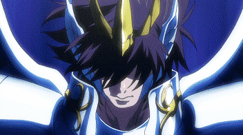
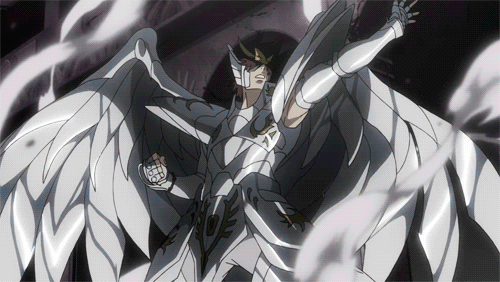

Saint Seiya: The Lost Canvas es una precuela de la serie original Saint Seiya, escrita por Shiori Teshirogi bajo supervisión de Masami Kurumada, es un manga spin-off escrito e ilustrado por Shiori Teshirogi, y que está basado en el manga original de Saint Seiya escrito y dibujado por Masami Kurumada. Está ambientada en el siglo XVIII, 243 años antes de los eventos de la historia original, y narra una Guerra Santa pasada entre Athena y Hades.
{}{}___________________________________________________________________{}{}
"La promesa", introduce la historia de tres huérfanos: Tenma, Alone y Sasha, quienes crecen juntos en un orfanato en un pequeño pueblo de Italia durante el siglo XVIII. Tenma es impulsivo y valiente, mientras que Alone es un joven sensible y talentoso en la pintura.
Ver Capítulo 1{}{}__________________________________________________________________{}{}
"El despertar de Hades", profundiza en el entrenamiento de Tenma en el Santuario y en los primeros indicios del conflicto que se avecina.
Ver Capítulo 2{}{}___________________________________________________________________{}{}
"Comienza la Guerra Santa", marca el inicio del conflicto entre Atenea y Hades.
Ver Capítulo 3{}{}___________________________________________________________________{}{}
"La pulsera de oración", revela un poderoso artefacto vinculado a Sasha y sus poderes como Atenea. Mientras tanto, Alone comienza a reunir a sus espectros.
Ver Capítulo 4{}{}___________________________________________________________________{}{}
"La rosa venenosa", se centra en Albafica de Piscis, quien se enfrenta a un espectro envenenado que amenaza al Santuario.
Ver Capítulo 5{}{}___________________________________________________________________{}{}
"Funeral de flores", continúa el combate de Albafica, mostrando su trágico pasado y el poder letal de sus rosas.
Ver Capítulo 6{}{}___________________________________________________________________{}{}
Tenma llega a Jamir, donde se encuentra con Yuzuriha y Hakurei. Allí descubre el misterioso árbol que puede curar heridas del alma.
Ver Capítulo 7{}{}___________________________________________________________________{}{}
Tenma, Yato y Yuzuriha emprenden su viaje. Mientras tanto, Sasha comienza a asumir su rol como Atenea.
Ver Capítulo 8{}{}___________________________________________________________________{}{}
El espectro Bennu Kagaho aparece, y se enfrenta con el Santo de Capricornio, El Cid.
Ver Capítulo 9{}{}___________________________________________________________________{}{}
El enfrentamiento entre El Cid y Bennu Kagaho alcanza un punto crítico. Mientras tanto, Tenma sigue su camino hacia Hades.
Ver Capítulo 10{}{}___________________________________________________________________{}{}
Yato y Yuzuriha enfrentan obstáculos. Tenma se encuentra con una nueva amenaza espectral en el camino.
Ver Capítulo 11{}{}___________________________________________________________________{}{}
Tenma y sus amigos llegan al castillo de Hades. El enfrentamiento contra los espectros se intensifica.
Ver Capítulo 12{}{}___________________________________________________________________{}{}
Tenma recuerda su infancia con Alone y Sasha. Mientras tanto, el destino del mundo pende de un hilo.
Ver Capítulo 13{}{}___________________________________________________________________{}{}
Tenma y sus aliados entran en un bosque maldito, donde el peligro se oculta entre sombras.
Ver Capítulo 14{}{}___________________________________________________________________{}{}
Yuzuriha revive un recuerdo trágico de su pasado. El dolor emocional se mezcla con el combate.
Ver Capítulo 15{}{}___________________________________________________________________{}{}
Los Dioses comienzan a mover sus piezas en la Guerra Santa. Pandora da órdenes oscuras a sus espectros.
Ver Capítulo 16{}{}___________________________________________________________________{}{}
Manigoldo de Cáncer entra en combate, mostrando su poder brutal y su desdén por los espectros.
Ver Capítulo 17{}{}___________________________________________________________________{}{}
El pasado de Manigoldo y su maestro Sage se revela, con enseñanzas que lo forjaron como guerrero.
Ver Capítulo 18{}{}___________________________________________________________________{}{}
El Cid de Capricornio se enfrenta en una batalla decisiva. Su espada es la última barrera entre la vida y la muerte.
Ver Capítulo 19{}{}___________________________________________________________________{}{}
Tenma queda atrapado en un mundo onírico donde el pasado y la ilusión intentan quebrarlo.
Ver Capítulo 20{}{}___________________________________________________________________{}{}
Con la ayuda de sus compañeros, Tenma logra liberarse de la ilusión y seguir su camino.
Ver Capítulo 21{}{}___________________________________________________________________{}{}
La batalla en el castillo de Hades se intensifica. Tenma demuestra su determinación como Santo de Pegaso.
Ver Capítulo 22{}{}___________________________________________________________________{}{}
Tenma recibe una poderosa arma que podría cambiar el curso de la guerra.
Ver Capítulo 23{}{}___________________________________________________________________{}{}
Los Santos dorados enfrentan una emboscada mientras protegen el camino hacia Hades.
Ver Capítulo 24{}{}___________________________________________________________________{}{}
Se revela un importante recuerdo del pasado de Alone y Sasha, marcando sus decisiones actuales.
Ver Capítulo 25{}{}___________________________________________________________________{}{}
Tenma acepta por completo su destino como el Santo de Pegaso, preparándose para el destino final.
Ver Capítulo 26{}{}___________________________________________________________________{}{}
| "{ EPISODIO }" | "{ TITULO }" | "{ EMISION }" |
| 01 | La promesa | 24/06/2009 |
| 02 | El despertar de hades | 24/06/2009 |
| 03 | Comienza la guerra santa | 21/08/2009 |
| 04 | La pulsera de oración | 21/08/2009 |
| 05 | La rosa venenosa | 21/10/2009 |
| 06 | Funeral de flores | 21/10/2009 |
| 07 | El árbol de los frutos sagrados | 23/12/2009 |
| 08 | Un día con viento suave | 23/12/2009 |
| 09 | Una gran estrella | 24/02/2010 |
| 10 | Advenimento | 24/02/2010 |
| 11 | Inalcanzable | 21/04/2010 |
| 12 | Sacrificios interminables | 21/04/2010 |
| 13 | El viaje | 21/04/2010 |
| 14 | El Bosque de la Muerte | 23/06/2010 |
| 15 | Si pudiera regresar aquel dia | 23/06/2010 |
| 16 | Dioses y peones | 23/06/2010 |
| 17 | Basura | 21/07/2010 |
| 18 | Solo deseo que vivas | 21/07/2010 |
| 19 | Espada solitaria | 21/07/2010 |
| 20 | La prision de los sueños | 22/09/2010 |
| 21 | Más alla del sueño | 22/09/2010 |
| 22 | Un arduo Camino | 22/09/2010 |
| 23 | La Espada Sagrada | 24/11/2010 |
| 24 | Hora de una sangrienta batalla | 24/11/2010 |
| 25 | Hace muchas lunas | 24/11/2010 |
| 26 | Sé tú mismo | 24/11/2010 |
{}{}___________________________________________________________________{}{}
Saint Seiya: The Lost Canvas es una obra valiente que expande el universo de Saint Seiya con un guion bien construido y momentos heroicos sobresalientes. Sus puntos más altos son la química inicial entre Tenma y Alone, la profundidad trágica de varios Santos de Oro y un estilo gráfico detallado. No obstante, el ritmo desigual, algunas simplificaciones en la animación y la ausencia de un tema musical icónico la alejan parcialmente de la grandeza de la serie clásica.
